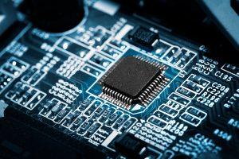
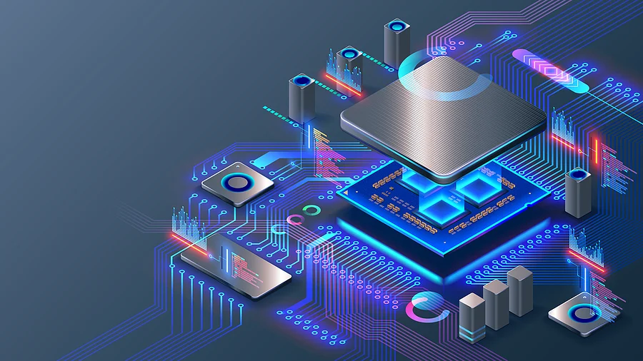

An embedded system is a combination of computer hardware and software designed for a specific function. Embedded systems may also function within a larger system. The systems can be programmable or have a fixed functionality. Industrial machines, consumer electronics, agricultural and processing industry devices, automobiles, medical equipment, cameras, digital watches, household appliances, airplanes, vending machines and toys, as well as mobile devices, are possible locations for an embedded system.
How does an embedded system work? Embedded systems always function as part of a complete device -- that's what's meant by the term embedded. They are low-cost, low-power-consuming, small computers that are embedded in other mechanical or electrical systems. Generally, they comprise a processor, power supply, and memory and communication ports. Embedded systems use the communication ports to transmit data between the processor and peripheral devices -- often, other embedded systems -- using a communication protocol. The processor interprets this data with the help of minimal software stored on the memory. The software is usually highly specific to the function that the embedded system serves.
The main characteristic of embedded systems is that they are task-specific. Additionally, embedded systems can include the following characteristics: typically, consist of hardware, software and firmware; can be embedded in a larger system to perform a specific function, as they are built for specialized tasks within the system, not various tasks; can be either microprocessor-based or microcontroller-based -- both are integrated circuits that give the system compute power; are often used for sensing and real-time computing in internet of things (IoT) devices, which are devices that are internet-connected and do not require a user to operate; can vary in complexity and in function, which affects the type of software, firmware and hardware they use; and
Embedded systems vary in complexity but, generally, consist of three main elements: Hardware. The hardware of embedded systems is based around microprocessors and microcontrollers. Microprocessors are very similar to microcontrollers and, typically, refer to a CPU (central processing unit) that is integrated with other basic computing components such as memory chips and digital signal processors (DSPs). Microcontrollers have those components built into one chip. Software and firmware. Software for embedded systems can vary in complexity. However, industrial-grade microcontrollers and embedded IoT systems usually run very simple software that requires little memory. Real-time operating system. These are not always included in embedded systems, especially smaller-scale systems. RTOSes define how the system works by supervising the software and setting rules during program execution.
Mobile embedded systems are small-sized systems that are designed to be portable. Digital cameras are an example of this. Networked embedded systems are connected to a network to provide output to other systems. Examples include home security systems and point of sale (POS) systems. Standalone embedded systems are not reliant on a host system. Like any embedded system, they perform a specialized task. However, they do not necessarily belong to a host system, unlike other embedded systems. A calculator or MP3 player is an example of this. Real-time embedded systems give the required output in a defined time interval. They are often used in medical, industrial and military sectors because they are responsible for time-critical tasks. A traffic control system
Some programming languages run on microcontrollers with enough efficiency that rudimentary interactive debugging is available directly on the chip. Additionally, processors often have CPU debuggers that can be controlled -- and, thus, control program execution -- via a JTAG or similar debugging port

Comments